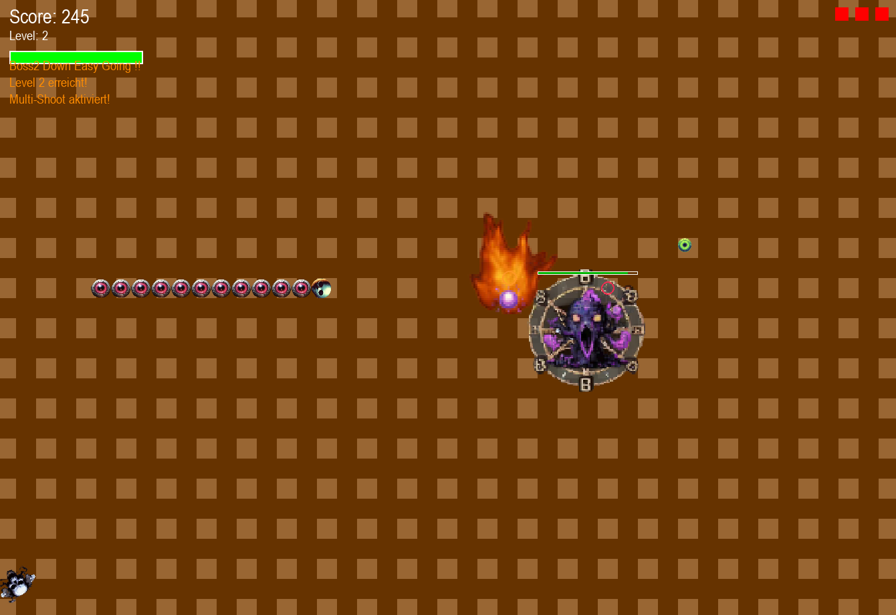
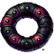
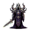
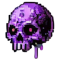
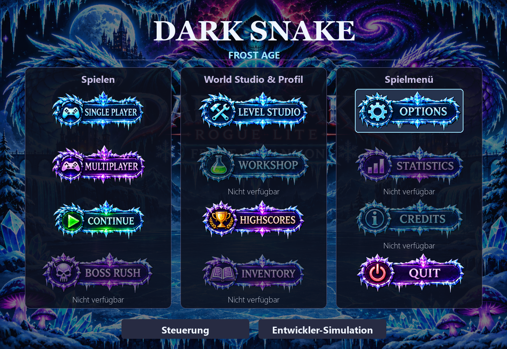
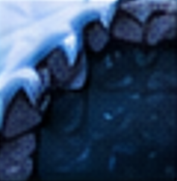
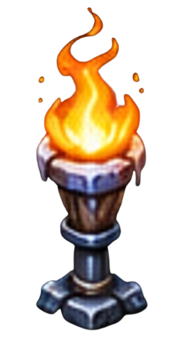
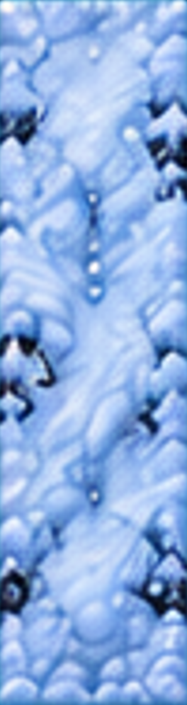
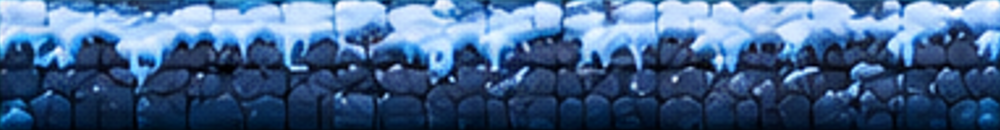

KOSTENLOSE WINDOWS-ALPHA · AKTIV IN ENTWICKLUNGFREE WINDOWS ALPHA · IN ACTIVE DEVELOPMENT
✦ WILLKOMMEN IM ABGRUNDWELCOME TO THE ABYSS ✦
DARK SNAKE
Ein Klassiker. Neue Zähne.A classic. With new teeth.
Steuere die Schlange, überlebe Bosskämpfe, würfle mit dem Schicksal und baue deine eigenen Welten. Klassisches Arcade-Snake trifft auf Frost, Magie und jede Menge selbstgemachte Ideen.Guide your snake, survive boss fights, roll the dice with fate and build your own worlds. Classic arcade Snake meets frost, magic and a growing collection of handmade ideas.
Windows · lokal 1–2 Spieler · Alpha vom 13.11.2026 · kostenlosWindows · local 1–2 players · alpha from 13 Nov 2026 · free
EINBLICK INS SPIELA LOOK AT THE GAME↗

Echter Spiel-Screenshot · früherer EntwicklungsstandReal gameplay screenshot · earlier development build

MEDUSA

JÄGERHUNTER

WÄCHTERGUARDIAN
Boss-Porträts aus echten Spielassets · Fähigkeiten werden weiterentwickelt.Boss portraits from actual game assets · abilities are still evolving.
✧ 1–2SPIELERPLAYERS✧ W20EREIGNISSEEVENTS✧ 3BOSS-PERSÖNLICHKEITENBOSS PERSONALITIES✧ F2 WORLD STUDIO
I. THE GAME
KLEINE SCHLANGE. GROSSES CHAOS.SMALL SNAKE. BIG CHAOS.
Schnell gestartet, schwer wieder wegzulegen. Eine Arcade-Runde, die jedes Mal anders laufen kann.Quick to start, hard to put down. Arcade runs that can unfold in surprising ways.
◉
ARCADE & TEAMPLAYARCADE & TEAMPLAY
Solo oder zu zweit am selben Rechner. Sammle Items, halte deinen Körper in Bewegung und überlebe mit gemeinsamen Team-Leben.Play solo or locally with a friend. Collect items, keep moving and survive with a shared team life pool.
⚔
BOSSE MIT CHARAKTERBOSSES WITH CHARACTER
Medusa, Jäger und Wächter haben feste Identitäten. Im aktuellen Entwicklungszweig kommen Phasen, Portale, Sprünge und dunkle Tunnel dazu.Medusa, Hunter and Guardian have distinct identities. The current development branch adds phases, portals, leaps and shadow tunnels.
⚄
WÜRFEL & ÜBERRASCHUNGENDICE & SURPRISES
Ein W20-Ereignissystem, Power-ups, Schüsse, Portale und wechselnde Situationen geben dem Klassiker neue Wendungen.D20 events, power-ups, projectiles, portals and shifting encounters add surprises to the classic formula.
✦
DEINE SCHLANGEYOUR SNAKE
Eigene Köpfe, Körper, Musik und freischaltbare Skins. Die Karriere- und Belohnungssysteme wachsen mit dem Spiel.Custom heads, bodies, music and unlockable skins. Progress and rewards keep growing alongside the game.
II. VISUAL ARCHIVE
BLICK INS DUNKLE HERZA LOOK INTO THE DARK HEART
Echte Bilder aus DARK SNAKE – keine erfundenen Spielscreenshots. Die Aufnahmen stammen aus unterschiedlichen Entwicklungsständen.Real DARK SNAKE images – no fabricated gameplay screenshots. Captures come from different development builds.

DAS HAUPTMENÜTHE MAIN MENU14.11.2026 · Entwicklungsaufnahmedevelopment capture
Mit F2 öffnet sich unser World Studio. Gestalte Spielflächen, Ebenen, Wände, Effekte und Dachbereiche; teste Level lokal mit einem oder zwei Spielern.Press F2 to open World Studio. Design arenas, layers, walls, effects and roof areas; test levels locally with one or two players.
WORLD STUDIOEditor-Aufnahme · 14.11.2026editor capture · 14 Nov 2026
EIN PAAR FROSTAGE-BAUSTEINEA FEW FROSTAGE BUILDING BLOCKS
Echte PNGs aus unserer Tile-Bibliothek – verschiedene Rastergrößen, keine künstlichen Mock-ups.Real PNGs from our tile library – multiple grid sizes, not fabricated mock-ups.
1 × 1

2 × 1

10 × 1

1 × 10

IV. THE JOURNEY
EIN SPIEL, DAS WEITERWÄCHST.A GAME THAT KEEPS GROWING.
IN DER ALPHA SPIELBARPLAYABLE IN THE ALPHA
DAS FUNDAMENTTHE FOUNDATION
Arcade-Runden, lokales Spielen zu zweit, Items, Bossbegegnungen und der Level-Editor. Die verlinkte Download-Version ist die Alpha vom 13. November 2026.Arcade runs, local two-player action, items, boss encounters and the level editor. The linked download is the alpha released on 13 November 2026.
NEUERER ENTWICKLUNGSSTANDNEWER DEVELOPMENT BUILD
DIE BOSSE LERNENTHE BOSSES EVOLVE
Phasen, KI-Test, sichere Teleportation und der Wächter-Rift sind bereits im Code auf main. Der nächste Entwurf ist eine echte Roll-/Rammattacke – noch kein fertiges Feature.Phases, optional AI tests, safe teleports and the Guardian Rift are already on main. A proper roll/charge attack is next on the drawing board – not implemented yet.
NOCH IN PLANUNGPLANNED FOR LATER
DIE NÄCHSTEN WELTENWORLDS TO COME
Mehr FrostAge-Gegner, neue Animationen und weitere Abenteuerideen bleiben bewusst Zukunftsmusik. Grafiken und Prototypen bedeuten noch nicht, dass sie spielbar sind.More FrostAge enemies, animations and adventure ideas remain future plans. Artwork and prototypes do not mean those features are playable yet.
Kostenlose Windows-Alpha. Keine Registrierung auf einer fremden Downloadseite – du landest direkt bei unserem offiziellen GitHub-Release.Free Windows alpha. No third-party download service – the button leads straight to our official GitHub release.
13.11.2026 · FROSTAGE ALPHA ZIP vollständig entpacken, dann DARK-Snake.exe starten. ZIP-Prüfsumme (.sha256) steht beim Download bereit.Extract the ZIP completely, then launch DARK-Snake.exe. A .sha256 checksum is supplied with the download.
TRANSPARENZTRANSPARENCY Die EXE ist derzeit nicht digital signiert; Browser oder Windows können warnen. Die aktuelle Entwicklung auf main enthält bereits neuere Funktionen als dieses Release.The EXE is currently unsigned; browsers or Windows may show warnings. The current main branch contains features newer than this release.
◈
VI. BUILT WITH HEART
AUS IDEEN WIRD EIN SPIEL.IDEAS BECOME A GAME.
DARK SNAKE ist ein unabhängiges Hobbyprojekt von DemusOpalium – mit viel Ausprobieren, eigenen Grafiken, echten Windows-Spieltests und der Zusammenarbeit mit Irian in einer KI-gestützten Entwicklung. Kein Großstudio. Einfach Freude am Bauen, Spielen und Weiterlernen.DARK SNAKE is an independent hobby project by DemusOpalium – built through experimentation, original artwork, real Windows playtests and collaboration with Irian as part of an AI-assisted workflow. No big studio. Just the joy of building, playing and learning.
Ideen, Fragen oder Bugs? Wir freuen uns über faire Rückmeldungen auf GitHub.Ideas, questions or bugs? Thoughtful feedback is welcome on GitHub.